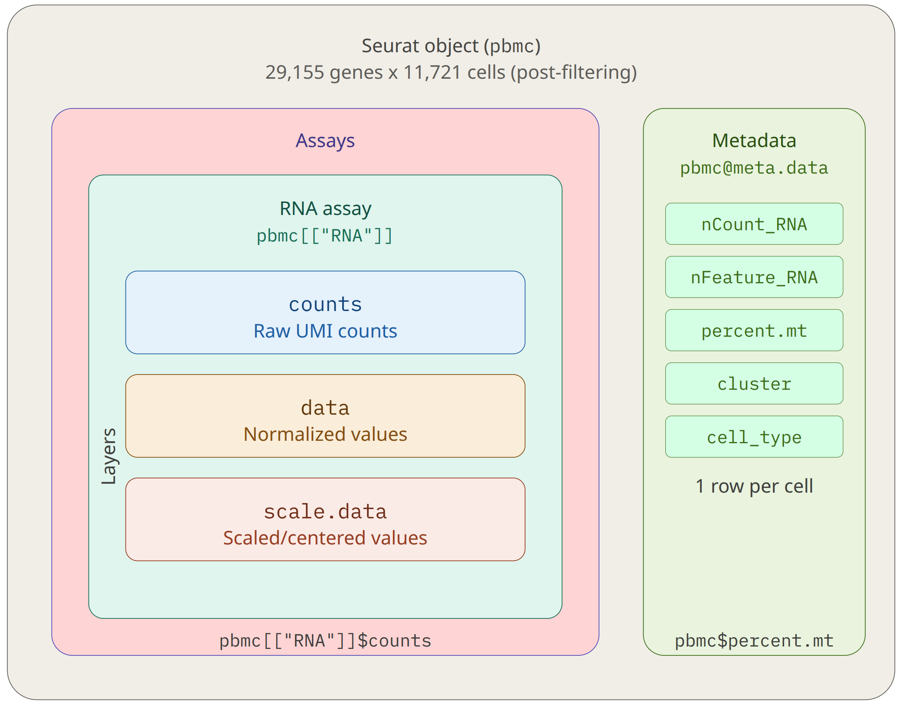
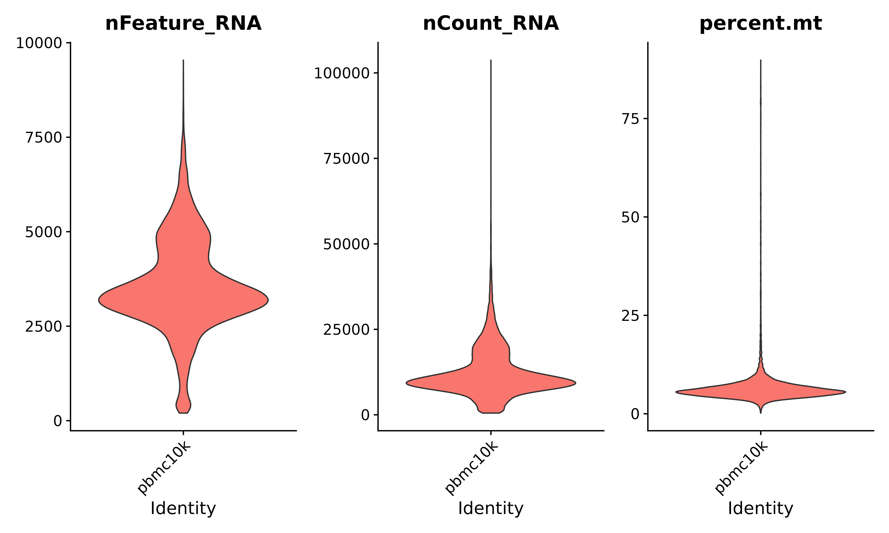
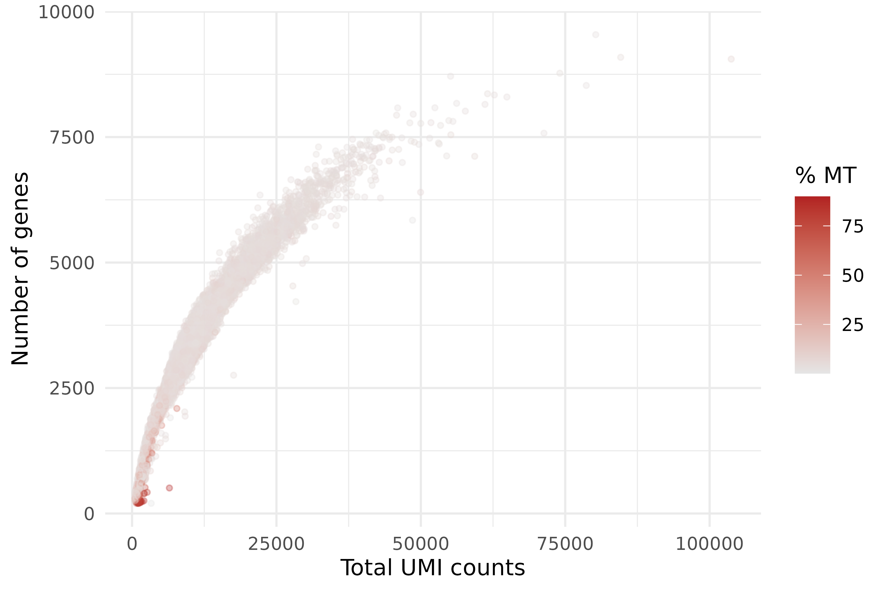
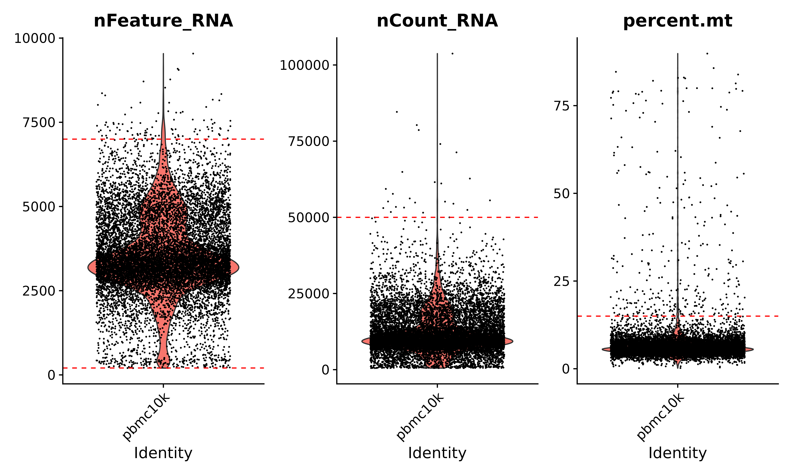
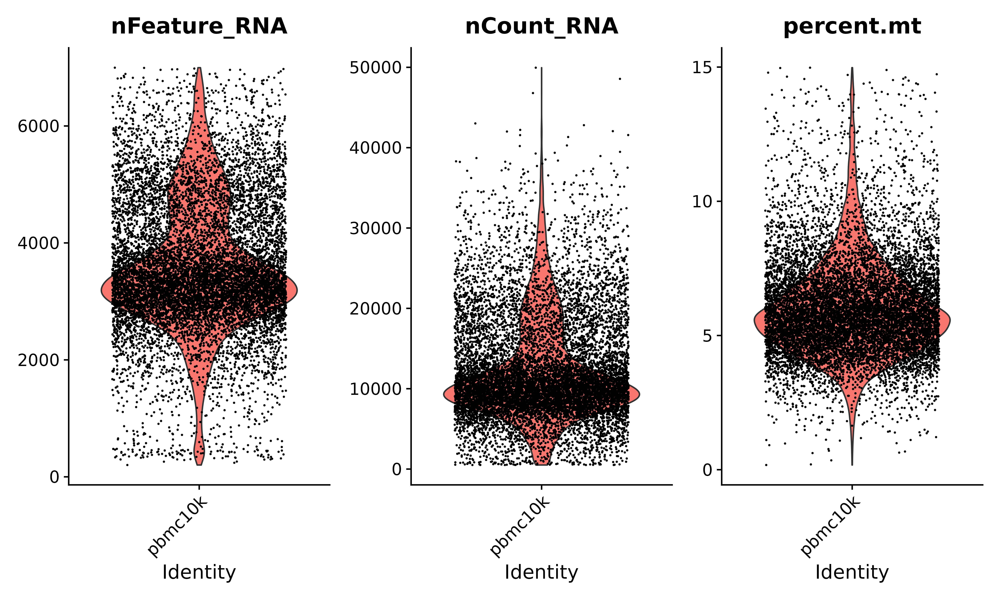
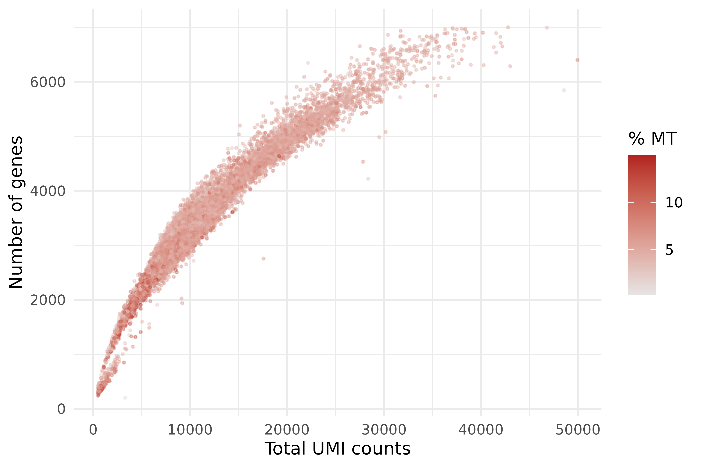

Quality Control
Last updated on 2026-05-14 | Edit this page
Overview
Questions
- How do we load a 10x count matrix into R and create a Seurat object?
- What quality metrics should we examine for scRNA-seq data?
- How do we choose appropriate filtering thresholds?
- How does mitochondrial gene percentage help identify dying cells?
- What are doublets and how can we detect them?
Objectives
- Load a Cell Ranger filtered count matrix into a Seurat v5 object
- Calculate and visualize QC metrics: nFeature_RNA, nCount_RNA, and percent.mt
- Apply filtering thresholds to remove low-quality cells
- Describe what doublets are and when dedicated detection tools are needed
Setup
R
library(Seurat)
library(ggplot2)
library(patchwork)
Loading Data into Seurat
The starting point for this episode is the filtered count
matrix produced by Cell Ranger in the previous episode. This
matrix lives in the filtered_feature_bc_matrix/ directory
and consists of three files: barcodes.tsv.gz,
features.tsv.gz, and matrix.mtx.gz. Seurat’s
Read10X() function reads all three files and assembles them
into a sparse matrix in R.
First, set up the path to the Cell Ranger output so that all file references in this episode use the same base directory:
R
data_dir <- paste0(
"/scratch/negishi/", Sys.getenv("USER"),
"/scrna_workshop/cellranger_output/pbmc10k/outs/filtered_feature_bc_matrix/"
)
Now load the count matrix:
R
pbmc.data <- Read10X(data.dir = data_dir)
Read10X() returns a sparse matrix where rows are genes
and columns are cell barcodes. Let’s check its dimensions before
creating the Seurat object:
R
dim(pbmc.data)
OUTPUT
[1] 38606 11809This tells us the matrix contains 38,606 genes (rows) and 11,809 cell barcodes (columns).
Now we create a Seurat object, which is the central
data structure for all downstream analysis. The
CreateSeuratObject() function takes the raw count matrix
and applies two initial filters:
-
min.cells = 3removes genes detected in fewer than 3 cells (these are too rare to be informative) -
min.features = 200removes cells with fewer than 200 detected genes (these are likely empty droplets or debris)
R
pbmc <- CreateSeuratObject(
counts = pbmc.data,
project = "pbmc10k",
min.cells = 3,
min.features = 200
)
pbmc
OUTPUT
An object of class Seurat
29155 features across 11721 samples within 1 assay
Active assay: RNA (29155 features, 0 variable features)
1 layer present: countsAfter the initial filters, we have approximately 23,700 genes and 11,700 cells. The gene count dropped from 36,601 because many genes were detected in fewer than 3 cells and were removed.
| Parameter | Value | Description |
|---|---|---|
counts |
pbmc.data |
The raw UMI count matrix (genes x cells). |
project |
"pbmc10k" |
A name for this project, stored in the object metadata. |
min.cells |
3 |
Keep only genes detected in at least 3 cells. Removes very rare genes. |
min.features |
200 |
Keep only cells with at least 200 detected genes. Removes likely empty droplets. |
Understanding the Seurat v5 object
The Seurat object stores all data and analysis results in an organized structure. The key components are:
-
Assays: containers for expression data. Our object
has one assay called
RNA. Each assay can hold multiple layers of the data at different processing stages. -
Layers: the expression matrices within an assay:
-
counts– the raw UMI counts (populated now) -
data– the normalized expression values (populated after normalization) -
scale.data– the scaled/centered values (populated after scaling)
-
- Metadata: a data frame with one row per cell, storing QC metrics, cluster assignments, and any other per-cell annotations.

You can inspect the metadata that Seurat automatically computed during object creation:
R
head(pbmc@meta.data)
OUTPUT
orig.ident nCount_RNA nFeature_RNA
AAACCCAAGCGCCCAT-1 pbmc10k 4282 2152
AAACCCAAGGTTCCGC-1 pbmc10k 29509 5990
AAACCCACAGACAAGC-1 pbmc10k 574 358
AAACCCACAGAGTTGG-1 pbmc10k 8400 2881
AAACCCACAGGTATGG-1 pbmc10k 9675 3731
AAACCCACATAGTCAC-1 pbmc10k 10058 3365Seurat automatically calculated two metrics per cell:
-
nCount_RNA– the total number of UMIs in that cell -
nFeature_RNA– the number of unique genes detected in that cell
Seurat v5 layer syntax
Seurat v5 introduced a new layer-based architecture.
To access expression data, use the $ operator on the
assay:
R
# Seurat v5 syntax (use this)
pbmc[["RNA"]]$counts # raw counts
pbmc[["RNA"]]$data # normalized data (after NormalizeData)
pbmc[["RNA"]]$scale.data # scaled data (after ScaleData)
If you see older tutorials using the @ slot syntax, that
is Seurat v4 and will not work correctly with v5 objects:
R
# Seurat v4 syntax (do NOT use)
pbmc@assays$RNA@counts # deprecated
QC Metrics
Not every barcode in the count matrix represents a healthy cell. Some barcodes correspond to dying cells, empty droplets that slipped through Cell Ranger’s filter, or doublets (two cells in one droplet). Before we can analyze the data, we need to identify and remove these low-quality barcodes.
We evaluate cell quality using three metrics:
| Metric | What it measures | Low-quality signal |
|---|---|---|
nFeature_RNA |
Number of unique genes detected per cell | Very low: empty droplet or debris. Very high: possible doublet. |
nCount_RNA |
Total UMI counts per cell | Very low: failed capture. Very high: possible doublet. |
percent.mt |
Percentage of UMIs from mitochondrial genes | High (>15–20%): dying or stressed cell. |
Let’s calculate the mitochondrial percentage. Human mitochondrial
gene names start with MT- (e.g., MT-CO1, MT-ND1, MT-ATP6),
so we use a pattern match:
R
pbmc[["percent.mt"]] <- PercentageFeatureSet(pbmc, pattern = "^MT-")
Now let’s inspect the distribution of all three metrics. First, we look at the summary statistics:
R
summary(pbmc$nFeature_RNA)
summary(pbmc$nCount_RNA)
summary(pbmc$percent.mt)
OUTPUT
# nFeature_RNA
Min. 1st Qu. Median Mean 3rd Qu. Max.
201 2895 3378 3557 4270 9540
# nCount_RNA
Min. 1st Qu. Median Mean 3rd Qu. Max.
505 8047 10357 12280 15166 103741
# percent.mt
Min. 1st Qu. Median Mean 3rd Qu. Max.
0.1752 4.8509 5.7882 6.7695 7.0114 89.8376 Most cells have 1,000–3,000 genes, 2,000–8,000 UMIs, and 3–5% mitochondrial content. But notice the maximum values: one cell has over 10,000 genes (possible doublet), another has over 86,000 UMIs, and one cell has 66% mitochondrial reads (clearly dying). These outliers are what QC filtering removes.
Violin plots
Violin plots show the distribution of each metric across all cells. They are the standard first visualization for scRNA-seq QC.
R
VlnPlot(pbmc,
features = c("nFeature_RNA", "nCount_RNA", "percent.mt"),
ncol = 3,
pt.size = 0,
layer = "counts")

Setting pt.size = 0 hides individual points so the
distribution shape is easier to see with 10,000+ cells. If you want to
see points, set pt.size = 0.1.
Scatter plots
Scatter plots reveal relationships between metrics.
The most informative plot is nCount_RNA
vs. nFeature_RNA, which should show a strong positive
correlation: cells with more total UMIs generally detect more genes.
Points that deviate from this trend are suspicious.
R
ggplot(pbmc@meta.data, aes(x = nCount_RNA, y = nFeature_RNA, color = percent.mt)) +
geom_point(size = 0.5, alpha = 0.4) +
scale_color_gradient(low = "grey90", high = "firebrick", name = "% MT") +
theme_minimal() +
labs(x = "Total UMI counts", y = "Number of genes")

What to look for in this plot:
- Main cloud: most cells should form a dense cloud along a rough diagonal. These are healthy cells with a proportional relationship between total RNA content and gene diversity.
- Bottom-left outliers: cells with very few UMIs and very few genes. These are empty droplets or debris that slipped through the Cell Ranger filter.
- Top-right outliers: cells with both very high UMI counts and very high gene counts. These are potential doublets – two cells captured in one droplet, producing double the RNA content.
- High mitochondrial cells: points colored in yellow/bright colors in the viridis scale. These often sit below the main diagonal because the cell is losing cytoplasmic RNA while retaining mitochondrial RNA.
What do dying cells look like?
When a cell is damaged or dying, its cell membrane becomes leaky. Cytoplasmic mRNA molecules – which are small and not membrane-bound – escape through the holes in the membrane. However, mitochondrial mRNA is protected inside the double-membraned mitochondria and does not leak out as readily.
The result is a cell with:
-
High
percent.mt: the remaining RNA is disproportionately mitochondrial -
Low
nFeature_RNA: many cytoplasmic transcripts have leaked out -
Low
nCount_RNA: total RNA content is reduced
This is why mitochondrial percentage is such a reliable indicator of cell quality. A healthy PBMC typically has 3–8% mitochondrial content. Cells with >15% are likely damaged, and cells with >20% are almost certainly compromised.
Setting Thresholds
Now we apply filters to remove low-quality cells. There are no universal thresholds that work for every dataset. The right cutoffs depend on the tissue type, species, experimental protocol, and sequencing depth. The best approach is to inspect the distributions (as we just did) and choose thresholds that remove clear outliers while preserving the bulk of the data.
For this PBMC dataset, we apply the following thresholds:
-
nFeature_RNA > 200: remove cells with very few genes (likely empty) -
nFeature_RNA < 7000: remove cells with an extreme number of genes (possible doublets) -
nCount_RNA < 50000: remove cells with unusually high UMI counts (possible doublets) -
percent.mt < 15: remove cells with high mitochondrial content (likely dying)
Let’s visualize where these cutoffs fall on the violin plots. Red dashed lines mark the thresholds:
R
p1 <- VlnPlot(pbmc, features = "nFeature_RNA", pt.size = 0.1, layer = "counts") +
geom_hline(yintercept = c(205,7000), linetype = "dashed", color = "red") +
NoLegend()
p2 <- VlnPlot(pbmc, features = "nCount_RNA", pt.size = 0.1, layer = "counts") +
geom_hline(yintercept = 50000, linetype = "dashed", color = "red") +
NoLegend()
p3 <- VlnPlot(pbmc, features = "percent.mt", pt.size = 0.1, layer = "counts") +
geom_hline(yintercept = 15, linetype = "dashed", color = "red") +
NoLegend()
p1 + p2 + p3 + plot_layout(ncol = 3)

Cells above or below the red lines will be removed. The small point
size (pt.size = 0.1) lets you see how many individual cells
fall outside the thresholds.
Let’s record how many cells we have before filtering:
R
cat("Cells before filtering:", ncol(pbmc), "\n")
Apply the filters:
R
pbmc <- subset(pbmc,
subset = nFeature_RNA > 200 &
nFeature_RNA < 7000 &
nCount_RNA < 50000 &
percent.mt < 15)
cat("Cells after filtering:", ncol(pbmc), "\n")
OUTPUT
Cells before filtering: 11721
Cells after filtering: 11310Filtering removes ~400 cells (~3.5% of the total). The exact number depends on minor differences in the Cell Ranger version and reference used. You should have roughly 11,300 cells remaining.
Let’s verify the filtering by looking at the QC distributions again:
R
VlnPlot(pbmc,
features = c("nFeature_RNA", "nCount_RNA", "percent.mt"),
ncol = 3,
pt.size = 0,
layer = "counts")

The violin plots should now show tighter distributions with the extreme tails removed. The mitochondrial percentage should be capped below 15%.
Let’s also verify with a scatter plot:
R
ggplot(pbmc@meta.data, aes(x = nCount_RNA, y = nFeature_RNA, color = percent.mt)) +
geom_point(size = 0.5, alpha = 0.4) +
scale_color_gradient(low = "grey90", high = "firebrick", name = "% MT") +
theme_minimal() +
labs(x = "Total UMI counts", y = "Number of genes")

Finally, save the filtered object for the next episode:
R
saveRDS(pbmc, file = "pbmc_filtered.rds")
MAD-based filtering
Instead of choosing fixed thresholds by visual inspection, a more principled approach is MAD-based filtering (Median Absolute Deviation). The idea is to compute the median and MAD of each QC metric, then flag any cell that falls more than a set number of MADs from the median as an outlier.
The formula for an upper threshold is:
threshold = median + N x MAD
and for a lower threshold:
threshold = median - N x MAD
where N is typically 3 or 5. For example, a cell is flagged as high mitochondrial if:
percent.mt > median(percent.mt) + 3 x MAD(percent.mt)
This approach is adaptive: it adjusts automatically
to the distribution of each dataset, so you don’t need to guess
appropriate cutoffs. It is implemented in the scuttle
Bioconductor package via the isOutlier() function.
For this workshop, we use fixed thresholds for simplicity and transparency, but MAD-based filtering is recommended for production analyses where you process many datasets with varying quality.
Doublet Detection
Doublets in scRNA-seq
A doublet occurs when two cells are captured in the same GEM droplet and tagged with the same cell barcode. The resulting “cell” has roughly double the RNA content of a real single cell, producing a hybrid expression profile that blends two cell types.
How doublets appear in QC metrics: Doublets tend to
have high nCount_RNA and high nFeature_RNA
because they contain RNA from two cells. Our upper threshold on
nFeature_RNA < 5000 catches some of the most extreme
doublets, but it cannot identify doublets between similar cell types
(e.g., two T cells) because their combined profile looks like a normal
high-quality T cell.
Dedicated doublet detection tools such as scDblFinder and DoubletFinder use a simulation-based approach: they create artificial doublets by randomly combining pairs of real cells, then train a classifier to identify real cells that resemble these artificial doublets.
When dedicated detection matters most:
- High cell loading (>10,000 cells targeted) where doublet rates exceed 5–8%
- Multiplexed experiments (e.g., cell hashing) with cross-sample doublets
- Studies where rare intermediate populations could be confused with doublets
For this dataset, the 10x Chromium platform at standard loading (~10,000 cells targeted) produces a doublet rate of approximately 3–5%. At this level, most doublets will be removed by our QC filters or will form small insignificant clusters that can be identified and removed during cell type annotation. We will not run a dedicated doublet detection tool in this workshop, but be aware of these tools for your own analyses.
Challenge 1: Propose Your Own Thresholds
Look at the violin plots and scatter plots you generated above. Based
on the distributions, propose your own filtering thresholds for
nFeature_RNA, nCount_RNA, and
percent.mt. Justify your choices. How many cells pass your
filters compared to the default thresholds
(nFeature_RNA > 200 & nFeature_RNA < 5000 & percent.mt < 15)?
Run the following code with your chosen values:
There is no single correct answer – reasonable thresholds depend on how conservative you want to be. Here is one example of a slightly more conservative approach:
R
pbmc_custom <- subset(pbmc,
subset = nFeature_RNA > 300 &
nFeature_RNA < 4000 &
percent.mt < 10)
cat("Cells with custom thresholds:", ncol(pbmc_custom), "\n")
This would retain roughly 8,500–9,000 cells compared to ~10,000 with the default thresholds. The trade-offs are:
-
nFeature_RNA > 300(vs. 200): slightly more aggressive removal of low-complexity cells, but may also remove some small cell types like platelets that naturally express few genes. -
nFeature_RNA < 4000(vs. 5000): catches more potential doublets, but could remove some large, highly transcriptionally active cells like monocytes. -
percent.mt < 10(vs. 15): removes more potentially stressed cells, but some immune cell types (e.g., activated T cells) naturally have moderately elevated mitochondrial content.
The key point is that more aggressive filtering is not always better. Every cell you remove is data you lose. The goal is to remove cells that would distort the analysis, not to enforce an artificially narrow definition of “high quality.”
Challenge 2: Aggressive Mitochondrial Filtering
What happens if you set percent.mt < 5 instead of
percent.mt < 15? Run the following code and compare the
number of remaining cells. Would this threshold be too aggressive for
PBMCs?
R
# Starting from the unfiltered object (re-load if needed)
pbmc_strict <- subset(pbmc,
subset = nFeature_RNA > 200 &
nFeature_RNA < 5000 &
percent.mt < 5)
cat("Cells with percent.mt < 5:", ncol(pbmc_strict), "\n")
pbmc_default <- subset(pbmc,
subset = nFeature_RNA > 200 &
nFeature_RNA < 5000 &
percent.mt < 15)
cat("Cells with percent.mt < 15:", ncol(pbmc_default), "\n")
With percent.mt < 5, approximately 5,500–6,500 cells
remain, compared to ~10,000 with percent.mt < 15. This
means you would lose roughly 35–40% of your cells with
the stricter threshold.
This is too aggressive for PBMCs. Here is why:
- The median mitochondrial percentage in this dataset is around 5.5%,
meaning that a
< 5cutoff removes more than half the cells by definition. - Different immune cell types have naturally different mitochondrial content. Activated T cells, monocytes, and NK cells tend to have higher mitochondrial content (6–12%) because they are metabolically active cells. A strict threshold disproportionately removes these populations, biasing your downstream analysis.
- A threshold of
< 5might be appropriate for some cell lines or tissues where mitochondrial content is uniformly low, but for primary immune cells from blood, 10–15% is a more appropriate cutoff.
As a general rule, look at the distribution of
percent.mt in your data. If there is a clear separation
between a low-mt peak and a high-mt tail, set your threshold in the
valley between them. If the distribution is unimodal (one smooth peak),
a fixed cutoff based on MAD (see the callout above) is safer than an
arbitrary round number.
-
Read10X()loads a Cell Ranger count matrix andCreateSeuratObject()creates the central data structure for Seurat analysis - The three key QC metrics are nFeature_RNA (genes per cell), nCount_RNA (UMIs per cell), and percent.mt (mitochondrial percentage)
- High mitochondrial percentage indicates damaged cells that are losing cytoplasmic RNA through a leaky membrane
- Filtering thresholds should be chosen by inspecting the data distributions, not by applying universal fixed cutoffs
- Dedicated doublet detection tools (scDblFinder, DoubletFinder) are available for high-loading experiments but are not always necessary at standard loading rates